Tablas combinadas y componentes vinculados
Capturas reales de Chromium. La demo incluye confirmación de pedido, bienvenida y actualización de envío. Cada correo conserva su contenido al cambiar entre ellos durante la sesión.
Biblioteca e instancias
Cabecera, pie legal, botón, aviso y firma. Los cambios del original se propagan; las propiedades personalizadas se mantienen y se pueden restablecer.
Biblioteca compartida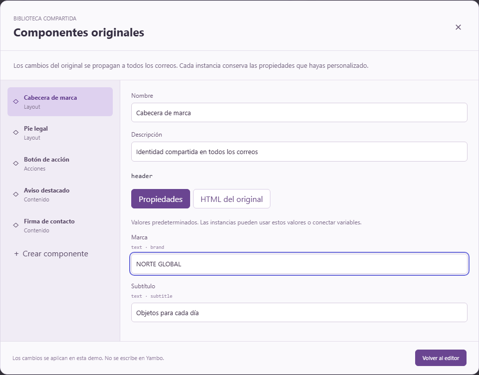
Insertar instancias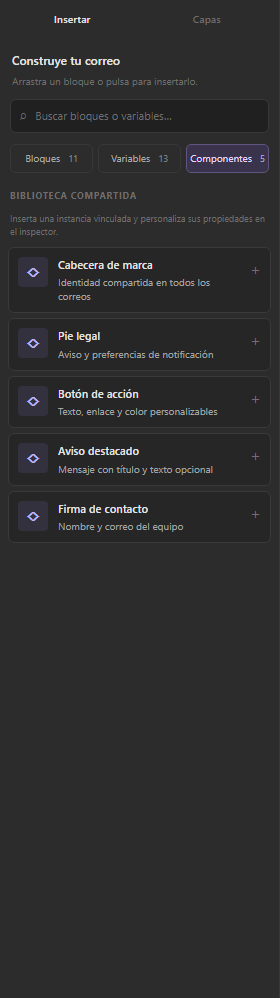
Propiedades de una instancia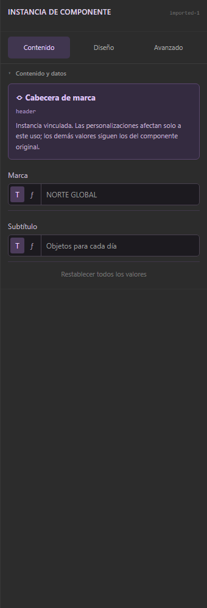
Varios correos
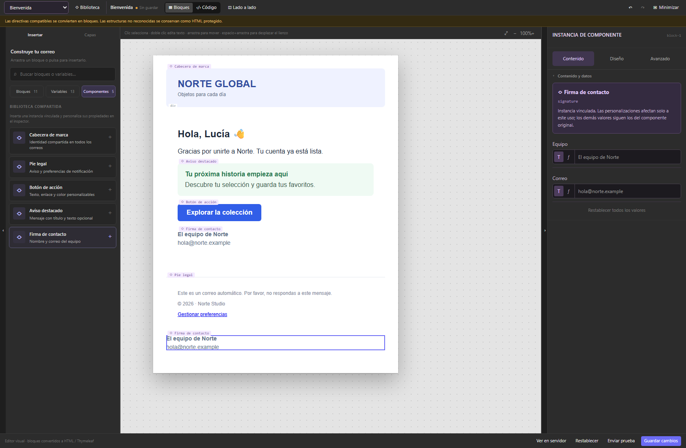
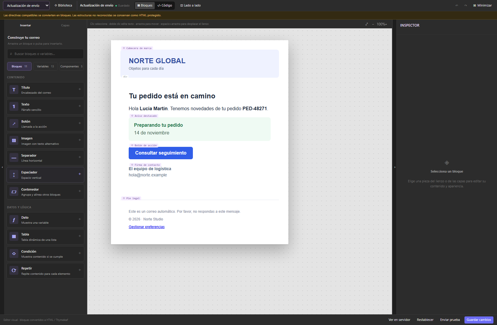
Inputs compactos y consistentes
Notación ${…} en componentes, celdas, enlaces, listas y texto editable. El selector T | ƒ distingue texto literal de valores dinámicos. El autocompletado se acepta con Tab o Intro.
Propiedad de componente con T | ƒ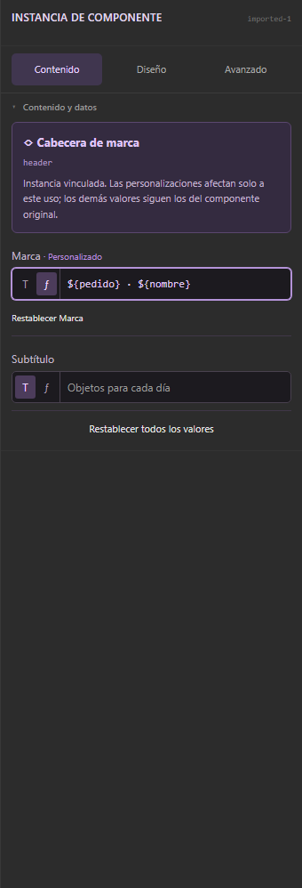
Arrastre de capas
Se puede empezar a arrastrar desde el nombre o el resto de la fila. El clic sigue seleccionando; el lienzo central mantiene su comportamiento.
Reordenar desde la fila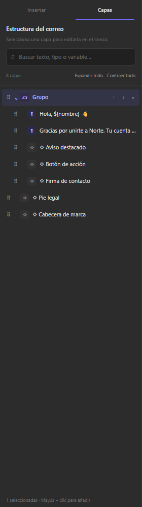
Tablas y configuración
Una cabecera con varios grupos de filas: arrays, cálculos, texto fijo y variables globales. Las columnas se ordenan arrastrando; su formato se aplica sin cambiar la asociación de datos. Se admite ${item.unitPrice} € y texto con varias variables. Las fórmulas tienen autocompletado y valores de ejemplo.
Columnas sin controles solapados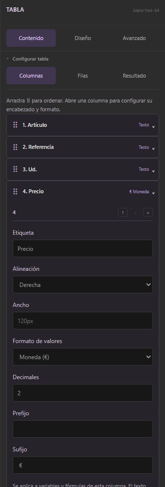
Valores y autocompletado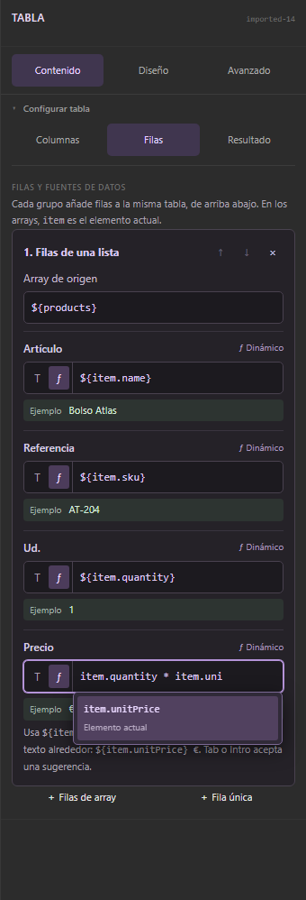
Datos generados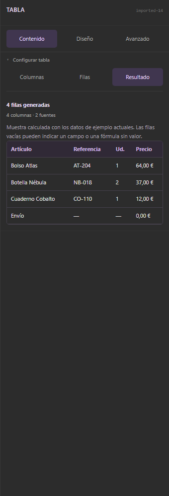
Lógica en Capas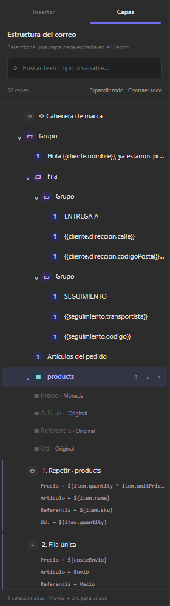
Alcance de la integración
Yambo se ha consultado en modo lectura. La biblioteca y las referencias se implementan en este prototipo; no se ha conectado su API ni se ha modificado el backend. Las referencias llevan HTML de respaldo para reabrirlas, y el render local usa las definiciones actuales de la biblioteca.
Inspirado en componentes e instancias de Figma: original compartido, propiedades locales y restablecimiento.
Comparaciones anteriores con OpenCV · Paneles y variables